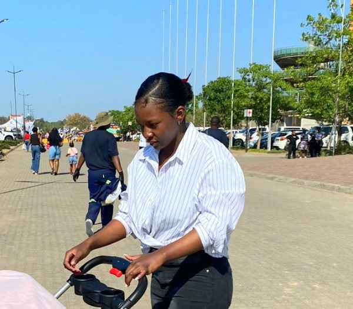

About Me
My name is Amma Bossman a aspiring student in software deevelopment. I grew up with a single parent, my father. I am passionate in cooking and love nature. I want to persue my stadies in Software Development to change my families situation around. That is my goal and tat is what I am going to achieve. I believe that Heavenly Father is always with me and that he sends the Holy Spirit to guide me in all my ways. When I fear, I nomarlly read Palsm 91, It gives me strenght and courage.
Web Dev Resources
Dev.to Community
Smashing Magazine
CSS Tricks
W3 Schools
Udemy
Image Placeholder